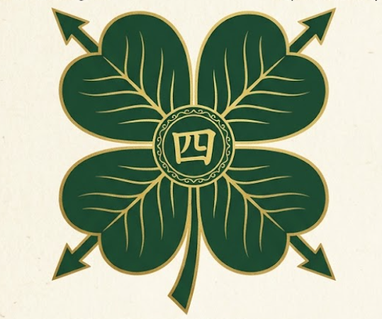

Collector Philosophy
Every item is approached as a historical object, not just inventory.

Yotsuba Clovers Rare Japanese Printed CultureYotsuba Clovers
A collector-focused home for Weekly Shonen Jump, vintage manga, anime publications, Japanese music magazines, catalogs, and art books.
Founded in Japan
Yotsuba Clovers is built around authentic Japanese printed culture: magazines, manga, catalogs, art books, and music publications selected for collectors who value context as much as rarity.
Our philosophy is simple: preserve the story of the printed object. Condition, edition details, publication era, inserts, design, and cultural significance all matter.
Every item is approached as a historical object, not just inventory.
Original Japanese publications remain the foundation of the collection.
Selections focus on cultural relevance, visual appeal, and collector interest.
A platform foundation for long-term collector-facing growth.
Featured Collections
Issues connected to major series, anniversaries, debuts, cover moments, and the development of modern manga culture.
Japanese manga volumes and related print items valued for publication era, condition, artist significance, and edition details.
Magazines, guides, and printed materials documenting Japanese animation, studios, creators, and fandom history.
Japanese music periodicals featuring artists, interviews, photography, tour coverage, and scenes from their original moment.
Printed catalogs that preserve product design, publishing history, advertising language, and visual trends from Japan.
Illustration, animation, manga, design, and culture books selected for collectors seeking enduring reference value.
Featured Discoveries
Serialization culture, cover history, milestone issues, and the paper trail of manga as it was first encountered by readers.
Japanese film and entertainment magazine history presented as a visual record of its era.
Artist photography, interviews, tour culture, and international music as preserved through Japanese publishing.
Original Japanese editions valued for publication context, paper, printing, and the details collectors study closely.
Period publications documenting studios, creators, voice actors, key visuals, and fandom culture.
Collector Trust
Printed items are handled with the fragility of paper collectibles in mind.
Yotsuba Clovers is designed for Western collectors and international buyers.
Condition, context, category, and edition details are treated as part of the value.
The collection centers original Japanese publications and print culture.
Future Channels
Future notes on discoveries, collector guides, Japanese print culture, and archival collecting.
A future entry point for the official Yotsuba Clovers online store, prepared without launching a shop yet.
A future visual channel for collection details, printed textures, covers, and archival discoveries.